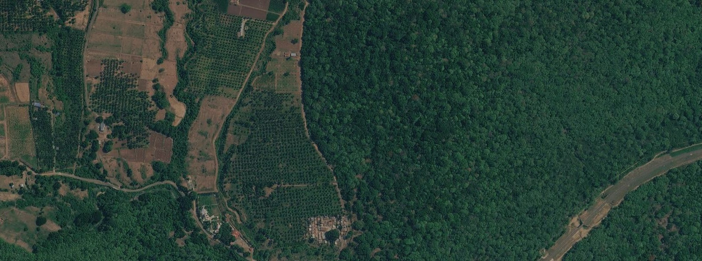

03.1
Plot verification
Checks of farm and plot geolocations against forest baselines and the EUDR cutoff date, with a clear result for each plot.
Pillar 03 · Forest monitoring
Whether you need to verify thousands of plots against the EUDR cutoff date or monitor forest health over a whole region, we build automated pipelines that your teams can easily run, so you own both the code and the product.

Background
The EUDR requires companies placing cattle, cocoa, coffee, oil palm, rubber, soy and wood on the EU market to show that these products do not come from land deforested after 31 December 2020. That means checking every plot, not just a sample, and keeping the evidence.
Our team's experience includes designing and deploying automated remote sensing pipelines in Google Earth Engine, Python and cloud machine learning to track and report deforestation in line with the EUDR, applying convolutional neural networks (CNN) and time-series methods to automate forest classification across high-risk regions, and delivering EUDR verification for international clients.
We also provide technical assistance to implement remote sensing and GIS in forestry activities, supporting your management on the ground with on-demand satellite analysis that gives forest owners actual data to make better management decisions.
What we offer
Plot-level verification against deforestation cutoff dates, with automated alerts and audit-ready evidence, built on scalable remote sensing and ML pipelines.
Checks of farm and plot geolocations against forest baselines and the EUDR cutoff date, with a clear result for each plot.
Validation of points and polygons: wrong coordinates, overlaps, oversized plots and other common errors.
Forest maps and change detection using optical and radar satellite data and time-series analysis.
CNN-based forest and land cover classification for regions where global maps are not accurate enough.
Cloud pipelines that re-run as new imagery arrives and produce audit-ready reports.
Monitoring of forest health and disturbance, including in European forests.
Experience
Our team has delivered forest monitoring for agricultural importers, sustainability standards and conservation programmes. That includes:
Related work
Tell us briefly about your project. We usually reply within one working day.